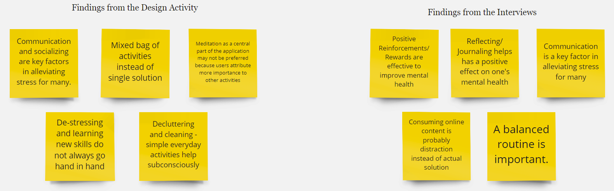
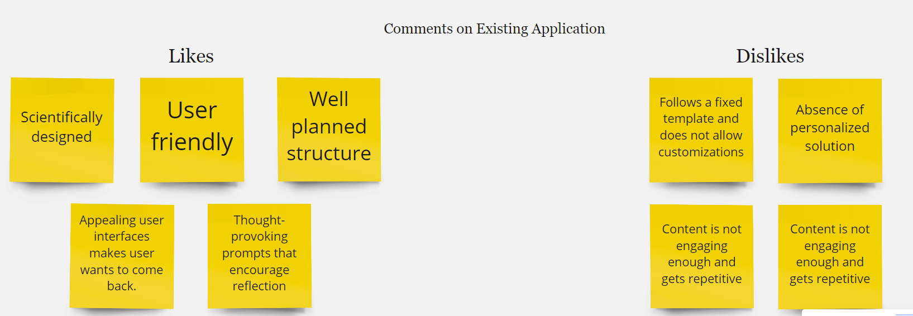
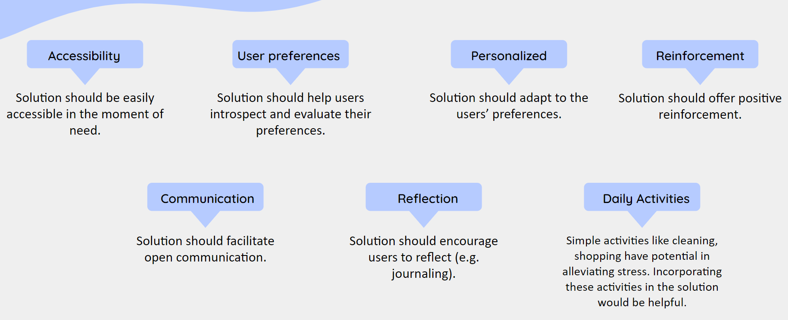

Activity: We wanted to see a month-wise gradation of the participant's activity levels across various parameters such as traveling, learning new skills, socializing with others, and spending time on a hobby. Each of these activities was assigned a distinct pen color. We divided our chart into 12 columns (for each month of the year) and 3 rows (to denote quantities - a little bit, good amount, a lot). We wanted to measure their stress levels as a function of these activities - in other words, we wanted to see if these activities have an inverse or direct proportionality with stress levels. So each participant was allotted a graph of their own and had to draw a graph for each of these activities and stress levels. Finally, participants were asked to talk about why they drew the graphs in a certain way.
Goal: The goal of this activity was to visualize the participants' journey maps over the year. We did expect to see a lot of peaks and troughs over the year. Our aim was to emphasize these transitions and probe the participants further about why those changes occurred.
Result
Activity: We listed out many positive, negative, and ambiguous emotions on singular sticky notes as a reference for the participants. They were given a prompt in the form of a relatable situation wherein they were asked to build a story around an extroverted student who misses socializing since the onset of the pandemic. First, they were asked to pick out all the emotions/feelings they thought this character must be feeling in the beginning. After this, we asked them to use why, when, how, what, where as building blocks to create a few instances of things that must have happened in this character's life. Finally, we asked them to bring this story to a happy ending by asking them to give suggestions about what the character should do to turn their negative emotions into positive ones.
Goal: The goal of this activity was to have the participants create make-believe situations that they thought could have occurred with a persona like this during the pandemic. Unlike the other two activities, this was the only one that required active collaboration between the three participants. They were asked to work on this story together. The usage of an imaginary character brought in a certain level of abstraction so as to stop the participants from just talking about their personal lives.
Result
Activity: We wrote sticky notes that covered a wide range of activities one might like to do for self-care - reading a book, talking with friends, shopping, watching TV, and so on. The participants were asked to pick a maximum of ten from these sticky notes to build their own magic potion recipe. There were three designated sections describing 'quantities' of the chosen activity they would like to put in their magic potion - they could choose either a generous amount, a few tablespoons or a dash of a certain activity. Thus, the participants had to prioritize their sticky notes and sort them into each of these sections, so that not everything was in a generous amount. This was an individual activity where each participant made their own separate potion.
Goal: The goal was to have the participants introspect what their most favorite activities are or what their ideal self-care therapy would entail. We wanted to understand which activities hold the most value to each of these participants and probe them further about the reasons for that.
Result
We conducted semi structured interviews with 4 participants to understand their current priorities/goals regarding their mental health and what technologies or resources do they use to achieve these. We followed up the semi structured interview with think aloud sessions using a psychological training application called Intellect.
 
